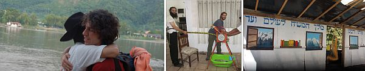

בלב הג’ונגלים
לא תאמינו, אבל בלב הג’ונגלים העוצמתיים של מדינת בוליביה, הקים זוג צעיר, הרב יהושע ורעייתו חנה גור, בית חב”ד לתפארת, אותו פוקדים אלפי ישראלים מידי חודש, שם הם מתוודעים ליהדותם, נחשפים לתורת החסידות ולרבי מה”מ, כותבים לרבי, ורואים ישועות בגשמיות וברוחניות • בכפר שאליו ניתן להגיע רק במטוס קטן הנוחת על
לא תאמינו, אבל בלב הג’ונגלים העוצמתיים של מדינת בוליביה, הקים זוג צעיר, הרב יהושע ורעייתו חנה גור, בית חב”ד לתפארת, אותו פוקדים אלפי ישראלים מידי חודש, שם הם מתוודעים ליהדותם, נחשפים לתורת החסידות ולרבי מה”מ, כותבים לרבי, ורואים ישועות בגשמיות וברוחניות • בכפר שאליו ניתן להגיע רק במטוס קטן הנוחת על כר דשא, מתכוננים כעת לחנוכת בניין המקווה החדש, וחושבים על בניית בית גדול לפעילות • סיפרו המרתק של בית חב”ד מהג’ונגלים!

העיירה הטרופית רורה–נבאקה ממוקמת בלב הג’ונגלים של מדינת בוליביה והיא נחשבת ליעד תיירותי פופולארי במיוחד עבור תרמילאים ישראלים שמגיעים בהמוניהם לאזור. האווירה הרגועה והנעימה, מזג האוויר החמים והקרבה לנהר הפמפס ולג’ונגלים, הופכים את השהות בכפר לאטרקציה ראשונה בחשיבותה במדינה לאחר עיר הבירה - ‘לה פז’.
“מדי שנה פוקדים את הכפר כחמישים אלף תיירים, מתוכם על פי אומדנים רשמיים ישנם כשלושים וחמשה אלף ישראלים. סביר להניח כי מתוך חמשה עשר אלף האחרים, ישנם בסבירות גבוהה עוד יהודים לא מעטים, כך שידינו בעונת הקיץ עמוסות בפעילות בכל שעות היום ולעיתים אף בשעות הלילה הקטנות”, מספר שליח הרבי מלך המשיח בכפר הרב יהושע (שוקי) גור.
מטיילים רבים הפוקדים את הכפר יוצאים ממנו למסעות מסוכנים במעמקי הג’ונגלים, שטים בנהר הפאמפס יחד עם תנינים ונחשי אנקונדה אימתניים ומקיימים פעילויות אתגריות מעוררת חלחלה. בעיירה הטרופית הזו שנראית לקוחה מתמונת טבע מושלמת, שורה אווירה רגועה ושלווה. כך גם הווי העיירה משרה תחושה של חופש וקלילות.
“אנחנו מרגישים שהמטיילים כאן יותר פתוחים לשמוע ואנחנו משמיעים את מה שיש לנו להשמיע. לאחר שש שנות פעילות אפשר לומר כי כחמישים מטיילים החלו את תהליך התשובה שלהם אצלנו וכיום הם שומרי תורה ומצוות לכל דבר ועניין, מתוכם חסידי חב”ד לא מעטים. אין כמעט מטייל שהגיע לכפר ולא ביקר בבית חב”ד”.
רורה–נבאקה משמשת נקודת יציאה לטיול בפארק הלאומי שנקרא ‘מאדידי’. הפארק משתרע על שטחים עצומים. בתוך יערות הגשם נמצאות חיות מכל המינים: ציפורים נדירות, נחשים, טרנטולות, נמרים, אך יחד עם זאת חרקים ויתושים שעקיצתם לא סימפטית ואף מסוכנת. “מדי שנה אנחנו מטפלים במקרים רבים של מטיילים שנפצעו או חלו; הרפואה בכפר פרימיטיבית ובהתערבותנו לא פעם הצלנו חיי מטיילים”.
בית חב”ד שפתח את שעריו בברכתו של הרבי מלך המשיח, פועל זו השנה השישית. הרב יהושע ורעייתו חנה גור יסדו בית חב”ד לתפארת בכל קנה מידה. בבית חב”ד מתקיימות תפילות, סעודות מדי יום וביתר שאת בשבתות ובימים טובים, שיעורי תורה, מבצע תפילין מדי בוקר בנקודות היציאה לטרקים, כתיבה לרבי מלך המשיח. בימים אלה ממש עוסק הרב גור בהשלמת בניית מקווה הטהרה הראשון בבוליביה. “בבוליביה לא פועל אף לא מקווה טהרה אחד. מקווה הטהרה הכי קרוב נמצא בארגנטינה השכנה, מרחק של שלושה ימים נסיעה וטיסה”. בשבועות הקרובים עומדים אפוא השלוחים לברך על המוגמר ולקיים את טקס חנוכת המקווה”.
עושים היסטוריה ברורה–נבאקה
אל הכפר הגיע הרב גור כבר בהיותו ‘תמים’ מן המניין. “במשך תקופה ארוכה שהיתי בשליחות בעיר דלהי בהודו וסייעתי לשליח הרב שמואל שארף. כשסיימתי את שליחותי, רציתי למצוא נקודה שבה עדיין לא נפתח בית חב”ד, וכך הגעתי לבוליביה. השליח אז בעיר הבירה של בוליביה היה הרב יותם קליין; התייעצתי איתו והוא המליץ לי על הכפר רורה–נבאקה”.
מי שהתלווה אל הרב גור היה החברותא שלו מ–770, ר’ שניאור רותם. “הוא פעל אז עם ישראלים בוואסט של ניו–יורק, וכשהצעתי לו להצטרף אלי לנסיעה, כתב לרבי, והמענה היה לשליח מהוואסט בשיקאגו ששאל את הרבי האם להתחיל פעילות חדשה או להצטרף לאלה שכבר קיימים, והרבי צידד בפתיחת פעילות חדשה. הוא ראה בכך תשובה ברורה והצטרף אלי.
“כשהגענו לכפר גילינו שהוא נבנה בכמעין קרחת יער גדולה, כאשר ארבע מאות אלף קילומטר לכל צד צומחים יערות ואין בהם נפש אדם. נחתנו על כר דשא במטוס מנהלים קטן שמנה תשעה עשר מקומות… לא היה הרבה זמן להתאקלם כדי להבין מה קורה ונכנסנו מיד לפעילות. מהר מאד הבנו שהאנגלית לא תסייע לנו ועלינו ללמוד ספרדית כדי להתחיל לפעול”.
צמד התמימים הגיעו לכפר שבועיים לפני חג הפסח. כבר במהלך החודש הראשון, הצליחו להקים בית חב”ד במקום מסביר פנים על שפת הנהר. בבית חב”ד החדש התקיימו מדי יום ביומו שיעורי תורה וארוחות ערב, במהלכן נחשפו המטיילים לבשורת הגאולה ולזהות הגואל בדרך לימוד חוויתית. כמו כן עסקו עם המטיילים בכתיבה באגרות הקודש.
אחד הנסים שהיו עמם בהתחלה, היה סביב הגעת המצות לליל הסדר. המשלוח שהיה אמור להגיע מארגנטינה, התעכב במקום כלשהו. בדרך–לא–דרך יצר ר’ יהושע גור קשר עם הגב’ נקש ממיאמי. היא מצדה כתבה מכתב לרבי וקיבלה הוראה לדאוג למצות שמורה לחג הפסח לשלוחים. תוך יממה הגיעו מצות השמורה שהספיקו בדיוק לכל משתתפי הסדר.
מאז הכול היסטוריה. הרב יהושע גור חזר ארצה, התחתן וביחד עם רעייתו המשיכו את הפעילות ואף העצימו אותה עשרות מונים. עשרות אלפי מטיילים עברו בבית חב”ד בשנים האחרונות, ותיבת המייל שלהם מלאה במכתבי תודה לזוג השלוחים שהזכיר למטיילים את ביתם ואת צור מחצבתם. מטיילים רבים הניחו תפילין לראשונה בבית חב”ד, קיבלו על עצמם כשרות או זכו לברך על הלולב או לסעוד את לבם בסוכה.
אורח מפתיע ביציאה מהמטוס
כמו בכל בתי חב”ד, בייחוד אלו הפועלים במקומות נידחים, זוג השלוחים נוכח במוחש ביד ההשגחה העליונה הפועלת ומלווה אותם על כל צעד ושעל. בפיו של הרב גור דוגמאות רבות, והוא בוחר עבורנו סיפור מיוחד שארע בשנה שעברה. “באותם ימים היינו בארץ ישראל, מצפים ללידת ביתנו. שלחנו אפוא זוג שלוחים במקומנו שיפעילו את בית חב”ד. באחד הימים הם היו צריכים לעזוב לכמה ימים, ועל כן הודיעו על סגירת בית חב”ד עד לשובם.
“הם טסו ונסעו במשך כמעט יממה עד לעיר הבירה, ומשם היה עליהם לנסוע לארגנטינה. לאחר מכן היה עליהם לשוב באותה דרך. לפתע המכשיר הסלולארי של השליח צלצל ומעבר לקו היה יהודי בוליביאני שסיפר שאביו המתגורר ברורה–נבאקה שוכב על ערש דווי והרופאים קצבו לו שעות ספורות לחיות. ‘מי יטפל בקבורתו?’ שאל את השליח שלא ידע מה לענות לו. השליח ביקשו אפוא לשוב אליו בשנית בעוד דקות ספורות, ובינתיים כתב לרבי ושאל האם לחזור חזרה לרורה–נבאקה או להמשיך לארגנטינה ולשוב לכפר השליחות כמתוכנן?
“המכתב שהשליח קיבל היה מדהים. הרבי כותב בערך כך: בנוגע להלוויה שהתקיימה ביום שלישי - כאן הרבי מבאר את מעלת השלישי. אותו היום היה יום רביעי, והשליח הבין מתשובת הרבי שאין לו מה לעשות בכפר עד יום שלישי, אז כבר ממילא תכנן לשוב. כשהאיש התקשר, דחה אותו השליח מיום ליום באמתלאות שונות ומשונות; בכל פעם האיש היה לחוץ יותר וסיפר שעוד רגע ממש אביו נופח את נשמתו, אך השליח היה רגוע והודיע לו שהוא יגיע לרורה–נבאקה בזמן.
“הניסיון היה קשה, מפני שיומיים אחרי כן, בערב שבת, הודיע לו האיש שהרופאים קצבו עוד חמש דקות; אך המציאות הייתה כמובן כמו שהרבי כתב אותה. ביום ראשון עשו השליח ורעייתו את דרכם בחזרה, ובפועל הגיעו לכפר בלילה שלפני יום שלישי. שעות ספורות אחר–כך נפטר אותו יהודי וביום שלישי התקיימה ההלוויה. מכיוון שבכפר לא הייתה אף פעם קהילה יהודית והוא היה היהודי היחיד שהתגורר בה בקביעות, הייתה זו ההלוויה היהודית הראשונה בהיסטוריה שהתקיימה במקום…
“במהלך ההלוויה התרחשה עוד השגחה פרטית מפעימה במיוחד. אותו יהודי היה ניצול שואה והכרתיו היטב, זאב צימרמן קראו לו. הוא עלה לארץ ישראל מרוסיה ועבד כמהנדס במשך שנים ארוכות בחברת ‘סולל בונה’. יום אחד פוטר מעבודתו בצעד שרירותי ובמקומו הכניסה החברה עובד ערבי; הוא שהיה פטריוט גדול, נפגע עד עמקי נשמתו ועזב את ארץ ישראל. הוא חיפש לברוח הכי רחוק והגיע לרורה–נבאקה. היו לנו הרבה מאוד שיחות, הוא היה יהודי חם ולבבי. כשהוא נפטר, עמדו בפניו של השליח הצעיר שאלות רבות, שכן מעולם לא התנסה בעניני טהרה וקבורה, כאשר כל ההכוונה קיבלנו מהרב יצחק אייזיק לנדא מצפת. הרב לנדא פסק שעדיף שאת הטהרה יעשו שני יהודים שומרי מצוות, והשאלה הגדולה הייתה מאיפה מביאים עוד יהודי שומר מצוות מלבד השליח?
“שאלנו האם ניתן להיעזר ביהודי לא דתי, אך הרב לנדא היה נחרץ שכדאי למצוא יהודי שומר תורה ומצוות. השליח לא ידע את נפשו מה עליו לעשות; איך ימצא בכפר הנידח הזה יהודי שומר תורה ומצוות. בצר לו החליט ללכת לשדה התעופה המאולתר של הכפר בו נוחתות טיסות אחדות מדי יום, כשבכל טיסה תשעה עשר נוסעים בלבד. הוא התחנן להקב”ה שישלח לו מטייל חובש כיפה שיוכל לסייע בידיו.
“המטוס הראשון נחת וממנו יוצאים כמה תרמילאים ענודים בעגילים ובשערות ארוכות. אחריהם יורד לפתע יהודי הדור צורה, עם זקן לבן, מגבעת ופראק של רבנים… השליח שפשף את עיניו וצבט את עצמו כלא מאמין. הוא היה בטוח שהוא חולם! הוא רץ אל האיש והסתבר שמדובר באישיות רבנית מבני–ברק, מצאצאי אדמו”ר הזקן, שכנראה בא לחפש את בנו שסר מדרך התורה.
“השליח סיפר לו על מצוקתו והוא סייע לו בשמחה רבה; בינתיים אף הסתבר שהלה גם יודע פרק בחזנות, והוא ניהל את ההלוויה כולה ביד רמה. השניים, השליח והרב, נדהמו מהשגחה המדהימה שהתרחשה מול עיניהם. הרי מה הסבירות שדווקא באותו יום ובאותה שעה ירד אותו רב מבני–ברק מהמטוס בשדה התעופה בכפר הנידח הזה בקצה העולם?!”
כשמדברים על השגחות פרטיות, אי אפשר שלא להתפעל מהנסים והנפלאות שמתרחשים מדי שנה בליל סדר, כאשר בכל פעם מגיעים מצרכי החג ברגע האחרון, ולא משנה עד כמה התכוננו השלוחים כמה חודשים מראש. “השנה למשל, כינסנו את המטיילים שעה לפני כניסת החג כדי שיוכלו לצלם והנשים תוכלנה להדליק נרות. אני מכניס את המטיילים לאולם כאשר עדיין אין לנו יין ומצוות אותם נסעתי להביא ברגע האחרון משדה התעופה וזאת למרות שהתחלנו להתארגן כמה חודשים מראש”…
השאלה שרבי לוי יצחק מברדיטשוב היה עושה ממנה ‘מטעמים’…
את הראיון אנחנו מקיימים כשהשעה ברורה–נבאקה היא שעת בוקר מאוחרת. “יש לנו מדי יום חלון זמן פנוי של כמה שעות להתארגן ולארגן את הפעילות בבית חב”ד”, משתף הרב גור בסדר יומו העמוס בבית חב”ד.
“בשעה שמונה בבוקר, אחרי התפילה, אנחנו יוצאים למקומות הריכוז של התיירים לקראת היציאה למסעות בג’ונגלים; אנחנו מניחים איתם תפילין, מברכים אותם שישובו בשלום ובבריאות, ומזמינים אותם לארוחת ערב הקבועה שמתקיימת מדי ערב בשעה שש וחצי בבית חב”ד. מהשעה שתיים בצהריים אנחנו מתחילים את ההכנות לסעודה, ברורה–נבאקה אין מצרכים כשרים וכל עוגייה או לחמנייה פשוטה אנחנו מכינים בעצמנו, כולל רבים מחומרי הגלם הטריוויאליים.
“כשמסתיימת הסעודה, מתקיים בדרך כלל שיעור בספר התניא שיכול להימשך עד השעות הקטנות של הלילה. זהו סדר היום הקבוע, אך אצלנו לא עובר יום ללא אירועים מיוחדים או אורחים מעניינים שמשנים את התוכנית”.
מטבע הדברים, בבית חב”ד המיועד למטיילים קשה לעקוב אחרי ההשפעה שיש לפעילות, שכן באי בית חב”ד מתחלפים ובאים בקצב גבוה. כדי לשמור על קשר לטווח ארוך יותר, פתחו השלוחים ספר אורחים שם מציינים המטיילים את שביעות רצונם מבית חב”ד, ומוסיפים גם כתובת דואר אלקטרוני שמתווסף למאגר של כמה אלפי מטיילים המקבלים בקביעות דברי תורה וחדשות קבועות מהנעשה ומהנשמע בבית חב”ד.
“בדרך הזו אנחנו יכולים לעקוב אחרי ההשפעה של בית חב”ד בהמשך הדרך, ולהמשיך להשפיע שפע רוחני על המטיילים. עשרות רבות של צעירים עשו צעדים משמעותיים בדרך העולה בית א–ל בעקבות הביקור שלהם בבית חב”ד, כמה מהם אף הפכו להיות חסידי חב”ד, כאשר אחד מהם אף משמש בעצמו בשליחות”.
כל סיפור התקרבות הוא מעניין ומרתק בפני עצמו, והרב גור בוחר עבורנו סיפור של צעירה שהגיעה לבית חב”ד עם אפס ידע בשמירת תורה ומצוות. “כשהיא נכנסה לבית חב”ד, ביקשה שאנחנו לא נזרוק עליה אבנים. בתחילה חשבתי שהיא מתבדחת איתנו, אך מאוחר יותר, כאשר הפכה להיות אורחת קבועה אצלנו, הבנתי שזה פחות או יותר הדבר היחיד שהיא ידעה על היהדות ועל הדתיים - שהם זורקים אבנים בשבת.
“בסעודת שבת אנחנו מקפידים - נוסף על דברי התורה ועל הסיפור החסידי - להציע לכל מטייל לקחת על עצמו החלטה טובה אחת לפחות ולשמור עליה. אותה צעירה שהתקרבה אלינו, הפתיעה אותנו כשאמרה שהיא מקבלת על עצמה לשמור על כשרות. היא לקחה את זה ברצינות ובמשך שבוע פקדה את בית חב”ד מדי יום ולמדה מאשתי את כל הדינים הבסיסיים של הכשרות.
“התחנה הבאה שלה בטיול הייתה ברילוצ’ה בארגנטינה. מיד כשנכנסה לבית חב”ד, ראתה את השליח מנהל דיון ער עם בחור דתי בנושא כשרות; הבחור טען שניתן לאכול פת וחלב עכו”ם ולא צריך להיות קיצוני, ואילו השליח הסביר לו עד כמה כשרות המאכלים זהו נדבך חשוב ועיקרי ביהדות, ועד כמה חשוב שלא ‘לעגל פינות’ כשמדובר בהלכה. היא הקשיבה ואף שאלה שאלות מתעניינות ונשארה עוד שבועיים בברילוצ’ה להוסיף וללמוד הלכות כשרות.
“היינו איתה בקשר כל הזמן, ולאחר שבועיים שלחה לנו מייל שהיא בבעיה. היא מתגוררת בהוסטל יחד עם עוד מטיילים ישראלים רבים, ובעיצומה של שבת היא הייתה רעבה והוציאה את הסיר שלה והתכוונה לבשל אורז. מטייל אחר, דתי לשעבר, הוכיח אותה שהיא איננה יכולה לשמור כשרות ובד בבד לחלל שבת, אך היא לטענתה, לא קיבלה על עצמה לשמור שבת. אם כן, מה עליה לעשות? שאלה שרבי לוי יצחק מברדיטשוב היה עושה ממנה ‘מטעמים’…
“לאחר שהתייעצנו עם משפיעים, כתבנו לה שאמנם היינו שמחים מאוד שתשמור שבת, אך היא אכן קיבלה על עצמה כשרות, וחשוב אפוא שתמשיך להתמיד בזה באופן של מוסיף והולך. ואכן, לאורך כל הטיול שלה, המשיכה להקפיד על כשרות וכששבה לארץ ישראל התחילה להתעניין יותר ויותר בדרך התורה, עד שהפכה להיות שומרת תורה ומצוות”.
על לשונו של הרב גור מתגלגלים סיפורים רבים והוא מבקש לשתף אותנו בעוד סיפור התקרבות מדהים של בחור מיבנה.
“כדי לשמור על קשר, אחת הבקשות שלנו מהמטיילים היא לרשום לנו את תאריך הלידה הלועזי שלהם ואנחנו בודקים מתי התאריך העברי בו נולדו, וביום זה אנחנו שולחים להם ברכה ומסר מיוחד בעבורם. כך נהגנו גם עם הבחור הזה מיבנה; מדי שבוע יש לנו כמה עשרות מטיילים שאנחנו שולחים להם ‘מזל טוב’ וגם הוא היה בתוכם.
“למחרת השיב לי מייל - ‘דע לך בזכותכם אני מקפיד להניח תפילין מדי בוקר’. התעניינתי אצלו איך הדבר קרה, והוא סיפר סיפור מדהים. יש לו חבר בארץ ישראל שבכל בוקר היה מפציר בו להניח תפילין, חוזר ומבקש מבלי להרפות, וזה הכעיס אותו. הוא החליט אפוא שלאורך כל הטיול שלו הוא יימנע מלהיכנס לבתי חב”ד כדי שלא יבקשו ממנו להניח תפילין. פרינציפ. אך כשהוא הגיע לכפר שלנו, חבריו משכו אותו לבית חב”ד. הוא אמר בינו לבין עצמו, אם יבקשו ממני להניח תפילין, אני אצא ולא אחזור; אך אם לא יבקשו ממני - אקבל על עצמי להניח מדי בוקר.
“הוא סיפר שנכנס ולא ביקשנו ממנו להפשיל שרוולים, שזה לכשעצמו פלא גדול, מפני שהנחת תפילין זה אחד הנדבכים המרכזיים שלנו; כנראה שבאותה שעה היינו עסוקים בדברים אחרים, בהשגחה פרטית. בפועל הוא יצא מבית חב”ד והחליט לעמוד בהבטחתו. בהמשך הזמן עשה עוד צעדים גדולים בדרך העולה בית א–ל והוא מקורב לשלוחים בעיר מגוריו”.
הצלה ברגע האחרון
בית חב”ד ברורה–נבאקה משמש לא רק כתובת לעניינים רוחניים. מטיילים המבקשים לקבל אינפורמציה על האזור, כמו גם מטיילים שנפצעו או חלו, המקום הראשון שיפנו לקבל ממנו עזרה יהיה בית חב”ד.
“מערכת הרפואה בבוליביה בכלל ובכפר בפרט, הינה פרימיטיבית מאוד. אם מישהו צריך התערבות רפואית דחופה, סיכויו לשרוד הם נמוכים. טיסות יוצאות מהכפר רק בשעות היום ובסך הכול ארבע טיסות בלבד. דרך נוספת להגיע לכפר היא בנסיעה ארוכה מאוד של כעשרים שעות העוברת דרך ‘כביש המוות’ הידוע במסוכנותו”.
פעמים רבות שהשלוחים זכו להציל חיים, ובפיו של הרב גור סיפור מפעים מהשנה שעברה. “הגיע אלינו לבית חב”ד מטייל עם נפיחות גדולה ברגל; התברר כי הוא שב מטיול באחד הג’ונגלים והתייסר מכאבים. השעה הייתה עשר בערב, והטיסה הראשונה מהכפר אל עיר הבירה היא בשש בבוקר, וגם זה רק למי שרכש כרטיס מבעוד מועד. המשרד למכירת כרטיסים נפתח רק בשעה תשע, כך שהפתרון היחיד שיכולתי להציע לבחור זה להתלוות אלי לביתו של רופא מקומי שהכרנו כדי שיבדוק את הרגל וייתן הערכה ראשונית.
“הרופא נתן הבטה חפוזה על הרגל ופסק שמדובר בנפיחות שתרד ועל הבחור לסבול מכאובים בעוד כמה ימים עד שהכאב יחלוף. יצאנו ממנו וראיתי שהבחור באפיסת כוחות של ממש. מול המציאות הזאת, דבריו של הרופא לא הרגיעו אותי והתקשרתי לרופאה ישראלית הנמצאת בלה–פז. סיפרתי לה על מצבו של הבחור שדיבר איתה בעצמו, אך היא לא הייתה רגועה וביקשה שהבחור יגיע בהקדם לקליניקה שלה.
“כששמעתי ממנה שמדובר במצב חירום, הערתי את מי שהיה צריך להעיר מהנהלת שדה התעופה. התברר שישנו עוד מקום אחד בטיסה של שש בבוקר ועוד מקום אחד בטיסה של תשע בבוקר בה היה אמור לטוס חברו של הבחור שליווה אותו. בינתיים הבחור וחברו הטוב שהו בבית חב”ד והשתדלנו לעודד את רוחו עד כמה שהיה אפשר, וניגשנו לכתוב לרבי ולבקש את ברכתו.
“התשובה היה ליהודי המיוחס ל’אור החיים’ הקדוש, והרבי מברך אותו בשלל ברכות. כמה מדהים היה כשהתברר שאותו בחור הוא צאצא של ה’אור החיים’… במכתב נוסף הרבי כותב ליהודי שסיפר לרבי שביקר אצל רופא ואלו המילים היחידות שהבנתי מפני שכל המכתב היה באידיש, סיכמתי עם הבחור שהוא יצא ללה–פז ואני אבקש מהשליח שם לתרגם לי את המכתב ולאחר מכן אספר לו מה כתב הרבי.
“בשש בבוקר הוא עלה על טיסה חלוש מיוסר ודואב. כשחברו הגיע ללה–פז שעתיים אחריו, הוא מצא אותו כבר בחדר ניתוח. התברר שווריד התפוצץ לו ברגל, ואם לא היה מטופל, הוא היה יכול להגיע לשערי מוות רח”ל. כשהוא דיבר איתי לאחר הניתוח והודה על מה שעשינו למענו, כבר היה לי את תוכן המכתב שקיבל מהרבי. הרבי כתב ליהודי שהלך לרופא שנתן לו דיאגנוזה לא נכונה, שלא צריך לכעוס עליו, מפני שרופא הוא רק אדם בשר ודם שיכול לטעות והקב”ה הוא הרופא כל בשר ומפליא לעשות”…
מקווה ובית הכלא וקשר מפתיע ביניהם
בניית מקווה מסתכמת בעלות של כמה עשרות אלפי דולרים, אך בכפר כמו רורה–נבאקה, הקושי הוא גדול יותר, שכן אין קבלנים שיודעים לבצע עבודה כזו. נוסף על הכסף, צריכים למצוא אדם מתאים וההדרכה צריכה להיות מוקפדת וצמודה.
הרב גור עבר את כל מסכת התלאות ולאחר חודשים ארוכים של השקעה עצומה, עומד בית חב”ד לחנוך בקרוב את המקווה היחיד במדינה. הסיפור שעומד אחרי בניית המקווה הוא לא פחות ממדהים, השגחה ניסית מפעימה ביותר.
“באחד מימי החנוכה לפני שנתיים טסתי ללונדון כדי לאסוף כספים לפעילות. ברקע של המסע היה רצון עז לאסוף סכום כסף עבור בניית מקווה טהרה, אך ידעתי שגם אם אצליח לאסוף סכום כסף נאה, הרי שהוא ילך להוצאה השוטפת של בית חב”ד. באותו היום עמדתי בתור בכניסה לביתו של אחד הגבירים היהודים בעיר, ובסמוך אלי בתור עמד יהודי חרדי נשוא פנים ששאל אותי למטרה לשמה אני אוסף. סיפרתי לו על בית חב”ד וציינתי שבכל המדינה אין אפילו מקווה טהרה אחד, מה שמקשה מאוד על הפעילות. חלומי אפוא לבנות בכפר מקווה.
“הוא הקשיב לדבריי ועיניו נצצו, הוא הפקיד בידי את כרטיס הביקור שלו ואמר לי שהוא אוהב פרויקטים כאלה, והוא מוכן לסייע לי להיכנס לעוד גבירים מידידיו והוא יעשה הכול כדי שיהיה לנו את הסכום הנדרש לבניית מקווה. כבר למחרת עמדנו יחד בפתח ביתו של גביר נוסף, ידיד אישי שלו, ואותו האיש העלה בפני ידידו על אודות מאסרם של שלושת בחורי הישיבה ביפן וסיפר שאביו של אחד מהם ביקש את ברכת אחד מרבני בני–ברק שהם ישתחררו, והוא ענה שאם הם ייבנו מקווה טהרה ביפן הרי שהוא מבטיח לו שהשלושה ישוחררו.
בשיתוף פעולה עם אחד השלוחים ביפן, הרב סודקביץ, נאסף הסכום על ידי שלושת המשפחות והמקווה החל להיבנות. ואכן מה שאותו רב אמר - התממש. בעת הנחת אבן הפינה שוחרר הבחור הראשון, באמצע הבניה שוחרר הבחור השני, וביום בכ’ בטבת הסתיימה הבנייה, וזמן קצר לאחר מכן השתחרר הבחור השלישי. אותו יהודי סיפר לגביר שישנו גביר חרדי מניו–יורק שנמצא במאסר בבוליביה לאחר ששכר יחד עם הממשלה בשדות חיטה, וכמה אנשי ממשל מושחתים עשו קנוניה נגדו. הלה נאסר והושם בתנאים מחפירים על לא עוול בכפו בבית סוהר בבוליביה.
“‘נפעל אפוא באותה שיטה - טען אותו יהודי באוזני ידידו ואני יושב בסמוך ומקשיב - נבנה שם מקווה והוא ישתחרר’. הגביר פנה אלי ושאל מה הסכום הנדרש. בתוך כשעה נאסף רבע מהסכום, והלה הבטיח להמשיך לאסוף.
“כשחזרתי לבוליביה התחלתי מיד לקדם את הבנייה. שבוע וחצי לאחר מכן פרסמה התקשורת ששמונה אנשי ממשל בכירים, ביניהם שופט בכיר, נעצרו באשמה שקשרו קשר נגד אותו גביר. אף על פי כן, הגביר עדיין לא שוחרר.
“לאחר מכן טסתי לארץ ישראל ונפגשתי עם המומחה הגדול למקוואות הרב פויזן ממודיעין שנתן לי את עצותיו והדרכותיו. מיד כשיצאתי ממנו נודע לי שאותו גביר יצא מהכלא והוא נמצא במעצר בית. במשך שנה שהה אותו גביר במעצר בית כאשר כל הזמן הזה היה המקווה בבניה. ביום שקיבלתי את כל הכסף לבנייה, הבור נחפר ויצקנו את היציקה, פרסמו כלי התקשורת שבדרך לא מובנת הצליח אותו גביר לצאת מבוליביה ולחזור לארצות הברית.
“כעת אנו עמלים על השגת תרומות בכדי לרכוש אריחים ומרצפות ולסיים את הבנייה שיהיה מקום ראוי לשמו”.
מכריזים משיח
רק מיותר היה לשאול את השלוחים ברורה–נבאקה לגבי פירסום משיח, שכן קירות בית חב”ד זועקים ‘משיח’, אך בכל זאת אנחנו שואלים ומקבלים תשובה ברורה.
“כשהתחלנו את הפעילות, קבענו לעצמנו שני מסמרות. הראשונה - לצאת מדי בוקר ולפגוש את המטיילים בנקודות היציאה שלהם לטראקים, והשנייה - הפצת בשורת הגאולה ללא כל פשט’לאך. אנשים מקבלים זאת בפשטות הכי גדולה, כמו מצוות אחרות ביהדות; הרי ליהודי שגדל בבית רחוק משמירת תורה ומצוות, מצוות נטילת ידיים או הנחת תפילין נמצא באותו קטגוריה שהוא לא מבין אותה.
“בכלל, הישראלי ה’צבר’ הוא איש ‘דוגרי’, הוא אוהב שאומרים לו את האמת גם אם היא נראית לא מציאותית בגדרי מחשבתו. מהי אפוא האמת של ליובאוויטש? על מה זעק הרבי מהרגע שעלה על כס הנשיאות? על משיח! כל נקודה בשליחות צריכה להיות חדורה בזה, ובשש שנות שליחותי ראיתי שאנשים מקבלים זאת בפשטות.
“מדי מוצאי שבת מגיעים מטיילים לבית חב”ד רק בשביל לכתוב לרבי והם רואים ניסים ונפלאות; אנשים משנים תוכניות ומקבלים החלטות טובות בעקבות הכתיבה לרבי. רואים בחוש שהעניין של ‘משיח’ גורם לאנשים להתקרב בצורה משמעותית יותר”.
• • •
על–פי התוכנית הגלותית, כהגדרתו של הרב גור, אם לא נראה בהתגלותו של הרבי בקרוב, הוא מתכוון לחנוך את המקווה טהרה ולעבור מיד לפרויקט נוסף - בניית בניין גדול ורחב ידיים שיעצים את הפעילות ויהווה בית רוחני לאלפי המטיילים הישראלים הפוקדים את הכפר.
בוליביה ותושביה
ממשלת בוליביה ידועה כממשלה התומכת באיראן ובשאר מדינות השונאות את ארץ ישראל. היא נמצאת יחד עם וונצואלה בקואליציה של מדינות הפועלות נגד ארצות הברית ומדינות המערב, וארץ ישראל בתוכם.
“מרבית תושבי המדינה הם אינדיאנים ואני לא חושב שהתושב הפשוט יודע מה זה יהודי ושיש עם יהודי”, אומר הרב גור. “ברובם הם נוצרים אדוקים, אך יחד עם זה הם עובדי אלילים ומאמינים ברוחות ובשדים. יש בעיר הבירה לה–פז כיכר שנקראת ‘ישראל’. לאחר הסיפור עם אוניית ‘המרמרה’, נשיא המדינה שינה את השם ל’כיכר פלסטין’, אך מאז כבר הספיקו להשיב את שמה המקורי”…
כמו בשאר מדינות דרום אמריקה, גם הרב גור משקיע בעבודה עם המקומיים. “אנשים בבוליביה מרבים להסתכל בטלוויזיה, ומדי תקופה אנחנו משלמים לתחנות טלוויזיה בולטות במדינה כדי שיפרסמו את המסר של הרבי על הגאולה הקרובה ועל חשיבות השמירה על שבע מצוות בני נח”.
הרב גור מתאר את התושבים כאנשים פשוטים מאוד, שחיים את מצוקות היום יום. הוא מוסיף ומספר מקרה שהיה לו הקשור עם פעילות בית חב”ד. “מדי שנה לפני חג הפסח אנחנו מכינים כמות של יין שתהיה לנו לליל הסדר. אנחנו רוכשים כמות של ענבים והופכים זאת ליין בעבודה עצמאית בבית חב”ד. הבעיה שבבוליביה אין חנויות ואין גם אספקת פירות וירקות סדירה; יש שוק ומה שקטפו בשדה אתמול מוכרים אותו היום. הזבן שמכר לך אתמול עגבניות מוכר היום ענבים ומחר חומרי ניקוי…
“חיפשנו דוכן עם ענבים ובהשגחה פרטית, לאחר כמה ימי מחסור, הגיעו ענבים. ביקשתי אפוא לרכוש את כל הדוכן. הזבנית שהייתה שם הביטה עלי בכעס וסירבה. ‘מדוע?’ שאלתי, והיא הסבירה שאם תמכור את כל הדוכן, לא יהיה לה מה לעשות בשאר שעות היום, היא תשתעמם… ברגע הראשון נדהמתי מהטענה שהעלתה, אך לאחר שהתעשתי הצעתי לה לבוא ולסייע לנו בבית חב”ד. היא הסכימה מיד. רכשנו את כל הענבים ומהצהרים ועד שעת ערב מאוחרת היא סייעה בעבודות השוטפות של בית חב”ד מבלי לבקש כל תמורה”…
הרב גור מספר על מקומיים רבים שמדברים עברית בצורה שוטפת. “בימינו הראשונים בכפר, מי שסייע לנו רבות היו מקומיים דוברי עברית שרכשו את השפה לאחר שנים ארוכות של עבודה עם מטיילים ישראלים. אנשים פה בדרך כלל חביבים ונכונים לעזור; לא פעם נתקענו ובהשגחה פרטית הגיח לפתע מקומי דובר עברית שסייע לנו… לאחר שזה קרה כמה פעמים, הפסקנו לעמוד פעורי פה.
“כנראה שמסובב הסיבות סובב שיקלטו את השפה העברית רק כדי שיהיו לעזרנו, כדברי הרמב”ם בסוף ספר היד החזקה על אומות העולם המיישרים קו למלך המשיח”.